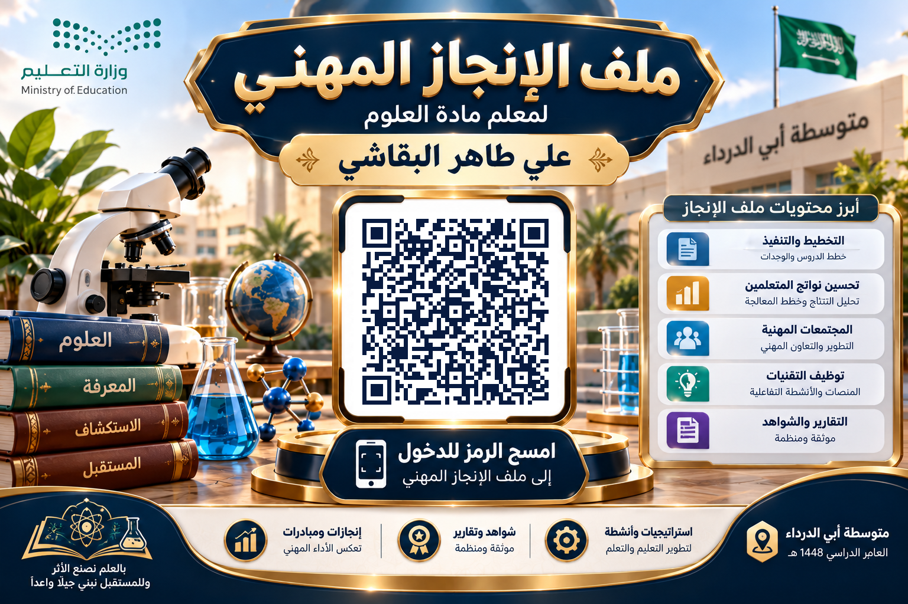

صفحة خاصة بالمعلم — لا تُرسل هذا الرابط للإدارة
اطبع الملصق أو أرسله للمدير؛ يفتح الباركود صفحة استعراض ملف الإنجاز مباشرة.

تنبيه: فتح صفحة المدير من جهازك للمعاينة يُحتسب على جهازك أنت فقط، ولا يؤثر على جهاز المدير.
عند طلب المدير إعادة الفتح، أنشئ رابطًا جديدًا وأرسله له. بمجرد فتحه يُعاد فتح الملف على جهازه. كل رابط يُستخدم مرة واحدة فقط.
يمكن للمدير أيضًا كتابة الرمز أعلاه يدويًا في شاشة الإغلاق.